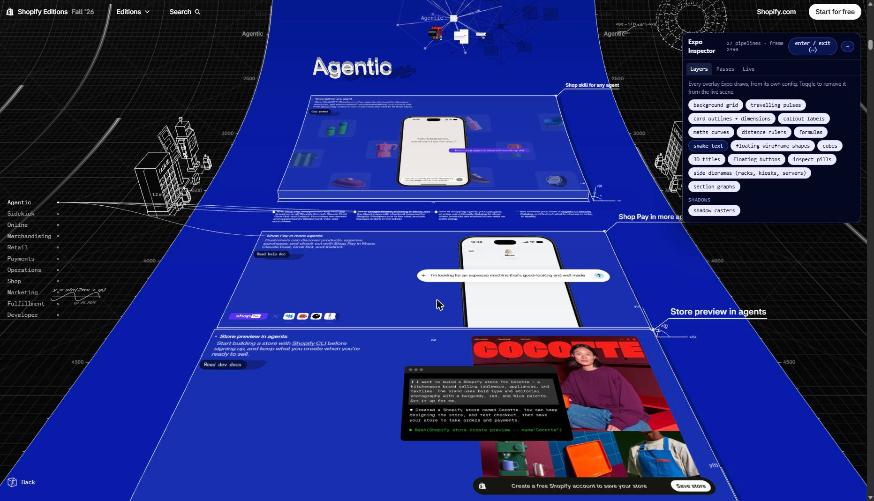
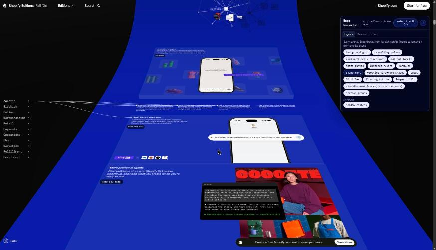
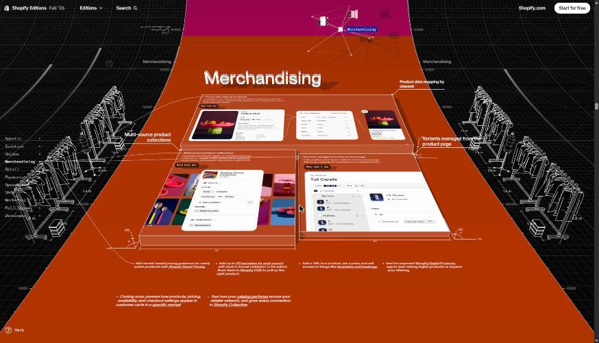
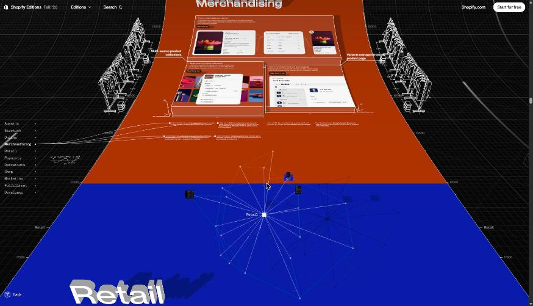
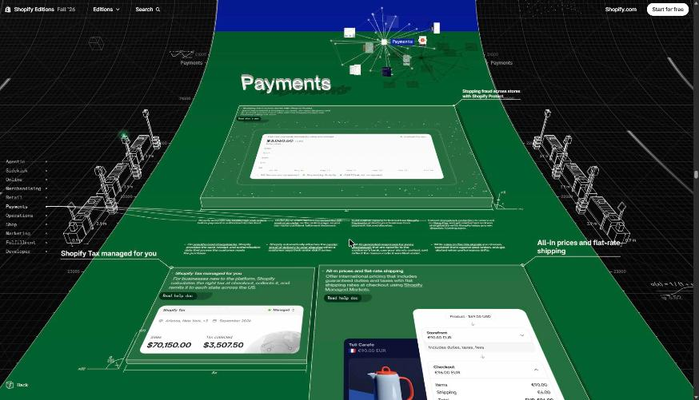
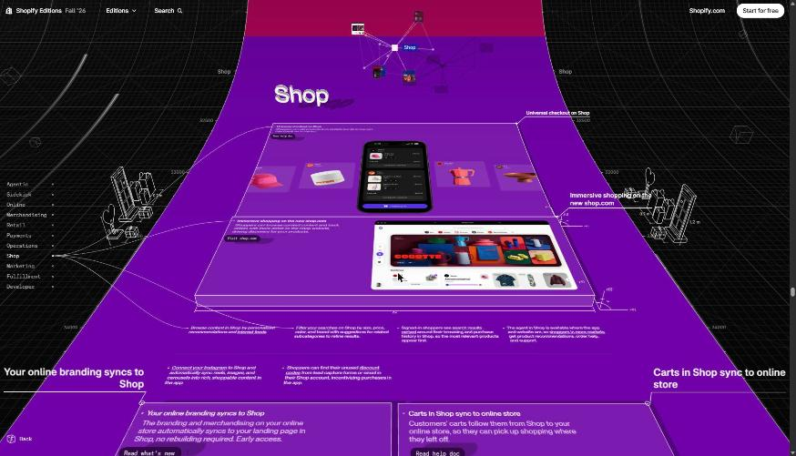
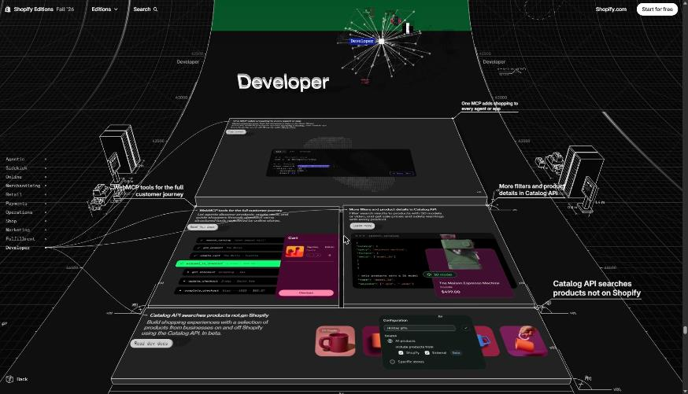
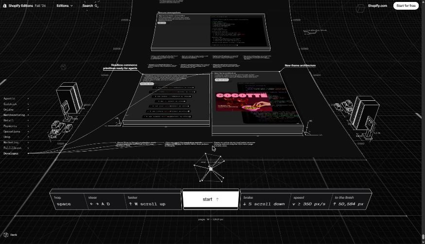

The whole page, from disk
The original page booted from your mirror. Scroll it, hover the rail widgets, open the socks.
Expo mode: the whole site, in 3D
Press ~ or the corner cube on the live site and the page tilts into a curled 3D ribbon. Every card rises into a slab, titles become extruded 3D letters, the hero graph lays flat, wireframe maths floats in the dark, and each section gets its own line-art diorama at the sides: kiosks, clothes rails, card terminals, servers. At the bottom, the page becomes a ball game.
It only runs on shopify.com: the site turns on Chrome’s experimental HTML-in-Canvas API with an origin-trial token that’s locked to that domain. So the tools for taking it apart run on the live site too.
Take it apart on the live site
- Open
shopify.com/editions/fall2026?game. The?gameflag makes Expo expose its live config. - Open DevTools (F12) → Console, paste the inspector, press Enter.
- Click enter / exit in the panel. It sees every GPU pipeline Expo creates as it starts.
All 16 overlay layers Expo draws, from its own config: grid, pulses, light, outlines, labels, maths, rulers, formulas, snake text, floats, cubes, 3D titles, floating buttons, inspect pills, side dioramas, section graphs. Toggle each off the live scene.
All 27 WebGPU pipelines, grouped: the curled page mesh, 3D titles, borrowed product models, overlay fills and lines, shadow casters, picking, mipmaps and live patches. Click one to stop drawing it.
The mode’s own constants as sliders: curl sharpness, fold angle, camera pitch, field of view, city height, light direction, plus a slow-motion tilt.
The real curl profile read off the GPU every frame, a minimap of every page upload and live patch, the GPU pick under your pointer, and a swing scope for every garment on the clothes rails.
Prefer a bookmark? Drag this to your bookmarks bar: Expo Inspector (loads it from this local server; Chrome will ask once to allow shopify.com to reach your local network).
Before and after: the same frame with layers stripped by the inspector


What you’re looking at






The clothes rail, in parts
Hero graph
The real hero inside the real page, and the payload it draws: every section hub, every update, every link.
Isometric plaza
The real mountRoom. It's all 2D: one painted background, sprites from a sheet, shadows from a tinted copy of that sheet, and trees that hide people by redrawing a cut-out of the background. Click a layer tile to switch it off in the live scene; walk someone behind a tree with Tree cut-outs off.
mounting…
Scene art it switches between
Exponential Socks
The real WebGPU sock engine. The model has no textures and no UVs; every stitch is generated in the shader. Step through the shader stages on the live sock, and inspect the raw mesh next to it.
mounting…
Shader stages
Each button swaps the shader's final colour for one of its own intermediate values, then remounts the engine.
The raw mesh
The print artwork (alpha only)
Product explode
The real widget on the left; on the right, the same four GLB files opened up. Every coloured piece is a part_* group that flies out along its own explode vector; ◆ markers are the empty anchor_* nodes the wires attach to.
mounting…
Payment checkpoint
The real particle widget: 83.3 payments a second flow at a line; exactly 3.5 a second are rejected and bounce off; the rest spring into four lanes whose spread is measured live. The tiles break each frame into what it's made of.
mounting…
Section widgets
All nine real widgets. Hover one to play it; open its layers to see what each frame is built from.